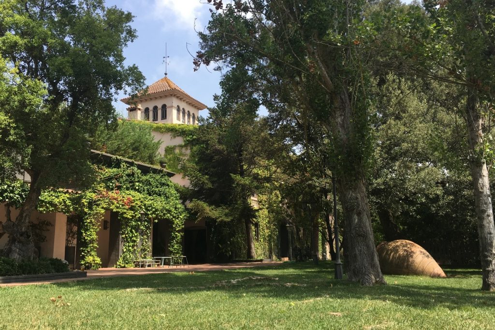
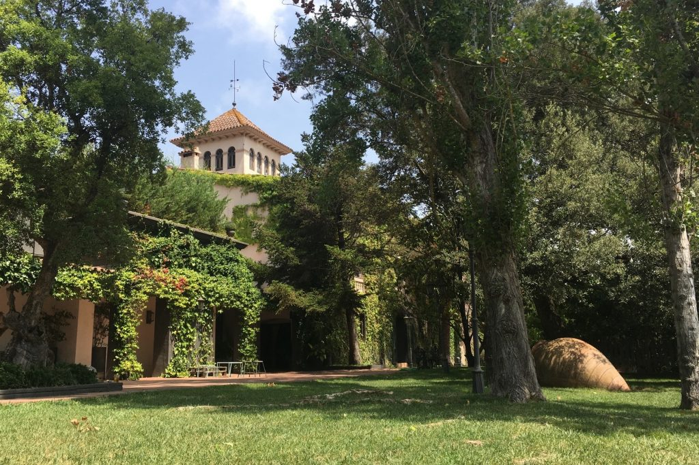

Judit y Adri
Como el buen vino
Nuestra historia
Después de 15 años por fin nos casamos, ¿Ya era hora, no?
Todo empezó un viernes de la primavera del 2008, dos niños de 16 años sin saber que les iba a deparar el futuro empezaron una historia de amor, y después de bastantes años, un 13 de mayo de 2023 llegará el gran día, ya unos treintañeros con ganas de seguir escribiendo páginas de su propia historia.
Y hemos llegado a un capítulo que va a ser muy importante, formalizar nuestra propia familia, y queremos que vosotros seáis participes de ello.
Estamos seguros que vais a recordar este día en un lugar muy especial de vuestros corazones.
Por este motivo os esperamos el día 13 de mayo de 2023 a la 13:00 en el restaurante Mas Vidrier.

Cuenta atrás
Day
Hours
Minutes
Minutes


#ComoElBuenVino
Dicen y es así como el vino mejora con los años. Eso es por una reacción química entre azúcares, ácidos y otras sustancias, pues lo mismo nos ha pasado a nosotros y nos seguirá pasando, cada año que pasa, esa reacción química va haciendo efecto y nuestra relación se va haciendo más fuerte.
Así que nuestra relación es como un buen vino gran reserva.
Nos gustaría que cuando pongáis fotos en las redes sociales pongáis el hashtag #comoelbuenvino para tener un buen recuerdo de ese día.
¿Piensas en algún temazo?
Toda boda, tiene un buen dj y una buena música.
Añade las canciones que te gustaría escuchar el día de la boda en esta Playlist Colaborativa en Spotify.
 
